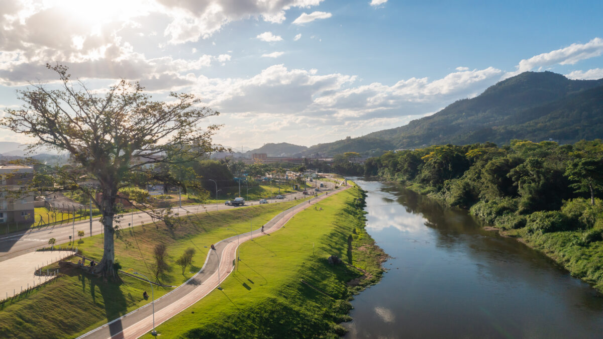

O Parque Linear Via Verde é um dos principais espaços públicos de Jaraguá do Sul.
O Parque Linear Via Verde, localizado no bairro Ilha da Figueira em Jaraguá do Sul - SC, é um amplo espaço de lazer às margens do Rio Itapocu, com cerca de 2 km de extensão. Conhecido como o "queridinho" local, oferece ciclovia, pista de caminhada, quadras esportivas, pista de skate, parquinhos, academia ao ar livre e áreas para piquenique.
